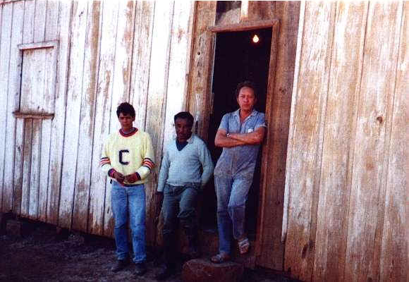
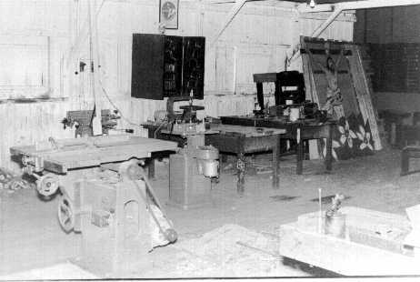
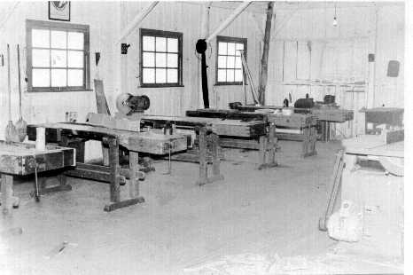
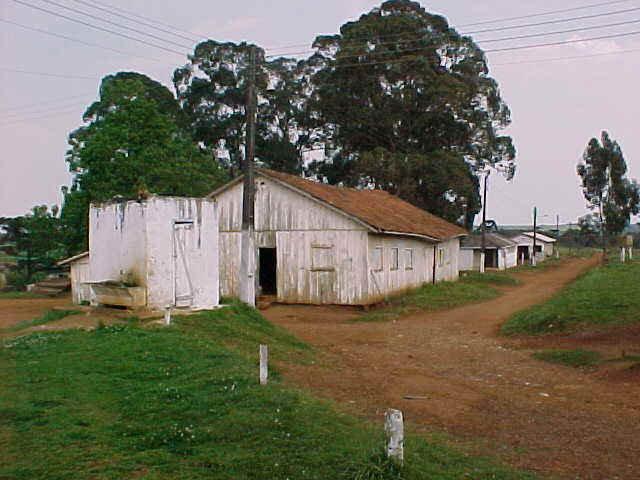
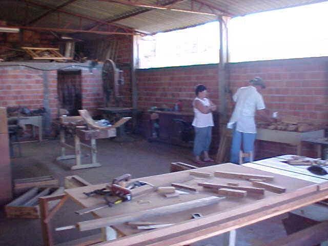
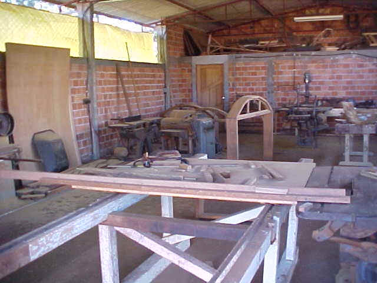
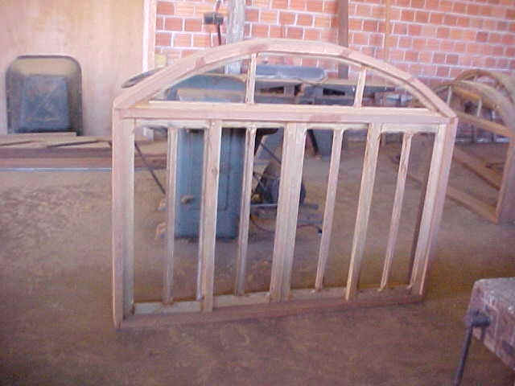

Marcenaria

Inaugurada em 1965 a oficina com equipamentos de última geração (na época)
destinava-se às aulas de oficina rural, onde os alunos aprendiam a trabalhar
com os mais diversos tipos de material. Hoje ela é utilizada como marcenaria,
para manutenção e fabricação de móveis e outros artigos de madeira.
Em 2002 teve suas instalações mudadas para um novo prédio próximo ao antigo

Josimar,Paixão, João, em frente a antiga marcenaria


vistas do interior da antiga marcenaria

marcenaria demolida em 2002
(seu material foi utilizado para a construção do aprisco da caprinocultura)
Nova marcenaria - 2003



VOLTAR